第十章:探索时间序列分析
在前一章中，我们讨论了使用深度学习及其在自然语言形式的非结构化数据(一种序列数据)方面的强大适用性。我们现在要关注的另一种序列数据是时间序列数据。我们可以将时间序列数据视为标准数据集，但包含基于时间的特征，从而在开发预测模型时释放出一系列新的可能性。
时间序列数据最常见的应用之一是一种称为时间序列分析的过程。我们可以将时间序列分析定义为数据探索和预测的一个领域，其中使用特定的时间间隔或时间戳对数据集进行排序或索引。在生物技术和生命科学行业，我们每天都会遇到很多时间序列数据的例子。一些更基于实验室的重点领域包括基因表达和色谱，以及非实验室领域，如需求预测和股票价格分析。
在本章中，我们将探讨几个不同的领域，以便更好地理解时间序列数据的分析，以及开发一个能够使用这些数据的模型，并开发一个稳健的预测模型。
在探索这些领域时，我们将涵盖以下主题:
- 了解时间序列数据
- 探索时序数据集的组成部分
- 教程–使用预言家和LSTM预测产品需求
记住这一点，让我们开始吧！
了解时间序列数据
当谈到使用时间序列数据时，有无数种方法来可视化和显示数据，以有效地传达思想或想法。到目前为止，在我们使用的大多数数据中，我们已经处理了特征和标签，其中某个特征集通常对应于感兴趣的标签。当涉及到时间序列数据时，我们倾向于放弃类或标签的概念，而更多地关注数据中的趋势。时间序列数据最常见的应用之一是需求预测的想法。需求预测，顾名思义，包括许多可用于帮助提前预测特定商品或服务需求的方法和工具。在本节中，我们将学习使用数据集进行时间序列分析的许多方面，该数据集涉及给定生物技术产品的需求预测。
将时间序列数据视为结构化数据集
如今市场上有许多不同的生物技术产品，从农业转基因作物到单克隆抗体疗法。在本节中，我们将通过使用dataset_demand-forecasting_ts.csv数据集来调查人类治疗药物的销售数据，该数据集属于一家小型生物技术初创公司:
- With this in mind, let’s go ahead and dive into the data. We will begin by importing the libraries of interest, importing the
CSVfile, and taking a glance at the first few rows of data:import pandas as pd df = pd.read_csv(“dataset_demand-forecasting_ts.csv”) df.head()
这将导致以下输出:
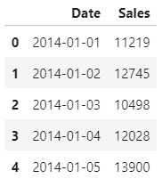图10.1–预测数据集的前几行
相对于我们过去处理过的许多其他数据集，这个数据集似乎简单得多，因为我们只处理两列:
Date和任意给定日期的Sales数。我们还可以看到，从2014-01-01开始，销售额是按天计算的。如果我们使用tail()函数检查数据集的结尾，我们将会看到数据集在2020-12-23结束——基本上为我们提供了6年的销售数据。 - We can visualize the time series data using the
Plotlylibrary:import plotly.express as px import plotly.graph_objects as go fig = px.line(df, x=”Date”, y=”Sales”, title=’Single Product Demand’, width=800, height=400) fig.update_traces(line_color=’#4169E1’) fig.show()
执行
fig.show()功能后，我们将收到以下输出: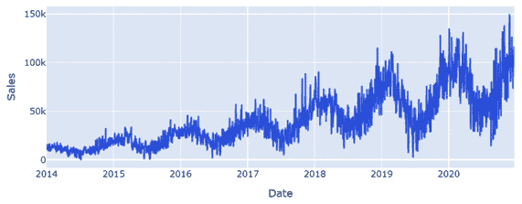图10.2–销售数据集的时间序列图
- 数据中有大量的噪声和可变性。
- 随着时间的推移，销售额逐渐增加(我应该投资他们！).
- 似乎有季节性的因素，销售在12月左右达到高峰。
为了更深入地探索这些想法，深入研究数据，我们需要解构时间序列方面。使用
Date列，我们可以将数据集分解为年、月和日，以便更好地理解这些数据的重复性或季节性。重要说明
数据集内的季节性是指与一年中的那个时间相关的季节性特征。例如，与流感疫苗相关的数据集通常显示，在为冬季(流感季节)做准备时，秋季的疫苗接种率相对于春季或夏季有所增加。
- First, we will need to use the
to_datetime()function to convertstringinto thedatetype:def get_features(dataframe): dataframe[“sales”] = dataframe[“sales”] dataframe[“Date”] = pd.to_datetime(dataframe[‘Date’]) dataframe[‘year’] = dataframe.Date.dt.year dataframe[‘month’] = dataframe.Date.dt.month dataframe[‘day’] = dataframe.Date.dt.day dataframe[‘dayofyear’] = dataframe.Date.dt.dayofyear dataframe[‘dayofweek’] = dataframe.Date.dt.dayofweek dataframe[‘weekofyear’] = dataframe.Date.dt.weekofyear return dataframe df = get_features(df) df.head()
执行此命令后，我们将收到以下数据帧作为输出:
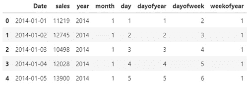图10.3–显示新功能的销售数据集的前五行
- Here, we can see that we were able to break down the time series aspect and yield a little more data than we originally started with. Let’s go ahead and plot the data by
year:plt.figure(figsize=(10,5)) ax = sns.boxplot(x=’year’, y=’sales’, data=df) ax.set_xlabel(‘Year’, fontsize = 16) ax.set_ylabel(‘Sales’, fontsize = 16)
绘制完我们的数据后，我们将收到下面的箱线图，它显示了每一年的销售额。从统计角度来看，我们可以证实我们最初的观察，即销售额每年都在逐渐增加:
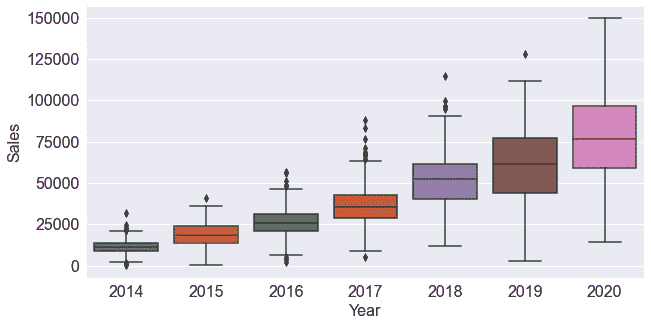图10.4–箱线图显示了每年不断增长的销售额
- Let’s go ahead and plot the same graph for each given
monthinstead:plt.figure(figsize=(10,5)) ax = sns.boxplot(x=’month’, y=’sales’, data=df) ax.set_xlabel(‘Month’, fontsize = 16) ax.set_ylabel(‘Sales’, fontsize = 16)
将x-轴从年改为月后，我们将收到下图，这证实了我们的观察，即销售数据往往在1月(1)/12月( 12 )左右达到峰值:
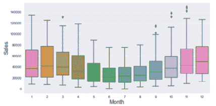图10.5–显示每月季节性销售的箱线图
早些时候，我们注意到数据集包含大量的噪声，也就是说数据中有大量的波动。我们可以通过采用滚动平均值 ( 移动平均值)来解决这种噪声并使数据正常化——这种计算通过创建一系列平均值来帮助我们分析数据点。
- 我们可以使用
rolling()函数:df[“Rolling_20”] = df[“sales”].rolling(window=20).mean() df[“Rolling_100”] = df[“sales”].rolling(window=100).mean()
在我们的数据框架中直接实现这一点 - Notice that in the preceding code, we used two examples to demonstrate the idea of a rolling average by using window values of 20 and 100. Using
Plotly Go, we can plot the original raw data and the two rolling averages onto a single plot:fig = go.Figure() fig.add_trace(go.Scatter(x=df[“Date”], y=df[“sales”], mode=’lines’, name=’Raw Data’, line=dict(color=”#bec2ed”))) fig.add_trace(go.Scatter(x=df[“Date”], y=df[“Rolling_20”], mode=’lines’, name=’Rolling 20’, line=dict(color=”#858eed”,dash=”dash”))) fig.add_trace(go.Scatter(x=df[“Date”], y=df[“Rolling_100”], mode=’lines’, name=’Rolling 100’, line=dict(color=”#d99543”))) fig.update_layout(width=800, height=500)
图10.6–显示销售数据滚动平均值的箱线图
请注意，原始数据集在背景中绘制得很模糊，被代表window值20的虚线和代表window值100的前景实线所覆盖。当您试图可视化和理解您的数据时，以及构建预测模型时，使用滚动平均会很有用，我们将在本章的后面看到。
重要说明
移动平均值 ( 移动平均值)是一种计算方法，用于通过在特定范围内取移动平均值来平滑噪声数据集。该范围通常被称为窗口，通常是最后的 x 个数据点。
时间序列数据与我们迄今为止在本书中探讨的许多数据集非常不同。与其他数据集不同，时间序列数据通常被认为与几个组件一致，所有这些我们将在下一节中探讨。
探索时间序列数据集的组成部分
在这一节中，我们将探讨通常被视为时间序列数据集的组成部分的四个主要项目，并将它们可视化。记住这一点，让我们开始吧！
时间序列数据集一般由四个主要部分组成:水平、长期 趋势、季节性和不规则噪声，我们可以将其分解为一种方法，称为时间序列分解。分解背后的主要目的是通过更抽象地思考数据来获得数据集的更好视角。我们可以认为时间序列的组成部分是加法或乘法:


通过执行以下简单的步骤，我们可以将statsmodels库与我们的数据集结合使用，更深入地探索和观察这些化合物:
- 首先，我们需要通过仅保留销售列、删除任何缺失的值并将日期列设置为数据帧的索引 :
dftmp = pd.DataFrame({‘data’: df.Rolling_100.values}, index=df.Date) dftmp = dftmp.dropna() dftmp.head()来重塑数据集 - We can check the first few rows to see that the date is now our index: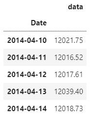
图10.7-整形数据集的前几行
- 接下来，我们将从
statsmodels库中导入seasonal_decompose函数，并将其应用到我们的dataframe:from statsmodels.tsa.seasonal import seasonal_decompose result = seasonal_decompose(dftmp, model=’multiplicative’, period=365)
- Finally, we can plot the result using the built-in
plot()function and view the results:result.plot() pyplot.show()
使用
show()功能将给出以下输出:
图10.8-季节分解函数的结果
在这里，我们可以看到我们在本节前面提到的四个组件。在第一个图中，我们可以看到我们在上一节中计算的移动平均值。接下来是长期趋势，它显示了整个数据集的稳定增长。然后，我们可以看到数据集背后的季节性，证实销售额在12月和1月左右趋于增长。最后，我们可以看到数据集内的残差数据或噪声。我们可以将这种噪声定义为对其他主要类别没有贡献的项目。
分解数据集通常是为了更好地理解数据及其一些主要特征，这通常会改变您对数据集和任何给定的可开发预测模型的看法。在下一节中，我们将学习如何开发两种常见的预测模型。
教程–使用预言家和LSTM预测需求
在本教程中，我们将使用上一节中的销售数据集来开发两个稳健需求预测模型。我们的主要目标是利用销售数据来预测未来的需求。需求预测通常用于预测在给定日期或地点要销售的单位数量。世界各地的公司，特别是那些处理温度敏感或时间敏感药物的公司，依靠这些等模型来优化其供应链，并确保满足患者的需求。
首先，我们将探索脸书著名的先知图书馆，接着开发一个定制的长短期记忆 ( LSTM )深度学习模型。考虑到这一点，让我们继续研究如何使用Prophet模型。
使用Prophet进行时间序列建模
Prophet是一个模型，当它在2017年首次发布时，在数据科学界获得了很大的吸引力。作为一个在 R 和 Python 中都可用的开源库，该模型很快被采用并广泛用作时间序列数据的主要预测模型之一。这种模式背后最大的好处之一也是它的后果之一——它的高抽象性，允许用户只用几行代码就能做出预测。这种有限的可变性是进行快速预测的好方法，但会阻碍模型开发过程，具体取决于手头的数据集。
在接下来的几页中，我们将开发一个Prophet模型，用我们的数据来预测未来的销售，并通过与实际销售数据进行比较来验证结果。让我们开始吧:
- 首先，让我们继续使用
rolling()函数来获得数据集的滚动平均值。然后，我们可以将这个值叠加到原始值上:df[“AverageSales”] = df[“Sales”].rolling(window=20).mean() fig = go.Figure() fig.add_trace(go.Scatter(x=df[“Date”], y=df[“Sales”], mode=’lines’, name=’Raw Data’, line=dict(color=”#bec2ed”))) fig.add_trace(go.Scatter(x=df[“Date”], y=df[“AverageSales”], mode=’lines’, name=’Rolling 20’, line=dict(color=”#3d43f5”))) fig.update_layout(width=800, height=500)
- This will result in the following output: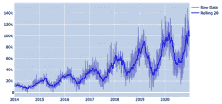
图10.9–相对于原始数据集的滚动平均值
在这里，我们可以看到数据集现在少了很多噪音，并且更容易处理。我们可以使用 Prophet 库和我们的数据集，通过四个基本步骤创建预测:
- 首先，我们需要重塑数据帧，将其与
Prophet库集成。库期望数据帧包含两列——ds和y——其中ds是日期戳,y是我们正在处理的值。我们可以使用下面的代码将这个数据帧改造成一个新的数据帧:df2 = df[[“Date”, “AverageSales”]] df2 = df2.dropna() df2.columns = [“ds”, “y”]
- 类似于
sklearn库的实现，我们可以创建一个Prophet模型的实例，然后fit到我们的数据集:m = Prophet() m.fit(df2)
- 接下来可以调用
make_future_dataframe()函数和感兴趣的期数。这将产生一个包含一列日期的数据帧:future = m.make_future_dataframe(periods=365*2)
- Finally, we can use the
predict()function to make a forecast using the future variable as an input parameter. This will return a number of different statistical values related to the dataset:forecast = m.predict(future) forecast[[‘ds’, ‘yhat’, ‘yhat_lower’, ‘yhat_upper’]].tail()
我们可以将数据集的范围限制为几列，并检索以下数据帧:
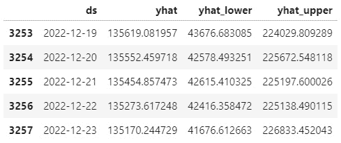图10.10-Prophet预测功能的输出
- Now, we can visualize our predictions using the built-in
plot()function from our Prophet instance:fig1 = m.plot(forecast)
这将产生以下输出，其中显示了原始原始数据集、未来预测以及一些上限和下限:
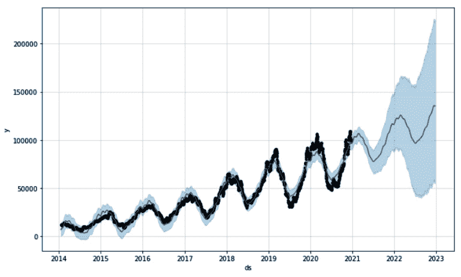图10.11–预测数据的图形表示
- 或者，我们可以通过使用一部分数据训练模型来测试模型的能力——例如，直到2018年的所有数据。然后我们可以使用预测模型来预测剩余时间，以便将输出与实际数据进行比较。完成后，我们将收到以下输出:
图10.12–培训和测试数据的图形表示
在这里，我们可以看到代表预测销售额的虚线非常接近实际值。我们还可以看到，该模型没有预测曲线的极值，因此它可能需要额外的调整，以达到更现实的预测。然而，预言家的高级本质可能会在这方面受到限制。
由此我们可以看出，准备数据和实现模型的速度非常快，我们只用了几行代码就完成了。在下一节中，我们将学习如何使用 Keras 开发一个 LSTM 。
使用LSTM进行时间序列建模
LSTM 模型最早在1997年获得普及，然后最近几年随着计算能力的增加再次流行起来。你可能还记得，LSTMs是一种递归神经网络(RNN)可以记住和忘记数据集中的模式。相对于 Prophet 而言，这种模式的一个主要优点是它的中低级本质，因为完整的实现需要更多的代码。用户获得了对模型开发过程的大量控制，使他们能够使模型适应几乎任何类型的数据集和任何类型的用例。记住这一点，让我们开始吧:
- 使用相同的数据集，我们可以使用
20的window创建一个滚动平均值，以减少数据集中的噪声。然后，我们可以删除由此导致的缺失值:df[‘Sales’] = df[“Sales”].rolling(window=20).mean() df = df.dropna()
- 使用
sklearn库中的MinMaxScaler，我们可以继续扩展我们的数据集:ds = df[[“Sales”]].values scaler = MinMaxScaler(feature_range=(0, 1)) ds = scaler.fit_transform(ds)
- 接下来，我们需要将数据分成训练集和测试集。请记住，我们在这里的目的是为模型提供一些样本历史数据，看看我们能否准确预测未来的需求。让我们继续使用数据集的75%来训练模型，看看我们能否预测剩余的25%:
train_size = int(len(ds) * 0.75) test_size = len(ds) - train_size train = ds[0: train_size,:] test = ds[train_size : len(ds), :]
- 鉴于我们正在处理时间序列数据，我们将需要使用
lookback在迭代中训练模型。让我们继续选择100的lookback值，并使用我们的dataset_generator函数来创建我们的训练和测试集。我们可以把一个lookback值看作模型应该在数据中回溯多远来训练:lookback = 100 X_train, y_train = dataset_generator(train, lookback) X_test, y_test = dataset_generator(test, lookback)
- 您可能还记得，在使用数据作为输入之前，我们需要
reshape我们的数据:X_train = np.reshape(X_train, (X_train.shape[0], 1, X_train.shape[1])) X_test = np.reshape(X_test, (X_test.shape[0], 1, X_test.shape[1]))
- 最后，准备好数据后，我们可以继续准备模型本身。假设我们只处理一个单一的特性，我们可以保持我们的模型相对简单。首先，我们将使用Keras中的
Sequential类，然后添加一个具有两个节点的LSTM层，再添加一个具有单个输出值的Dense层:model = Sequential() model.add(LSTM(2, input_shape=(1, lookback))) model.add(Dense(1))
- 接下来，我们可以使用学习速率为
0.001的Adam优化器，并编译模型:opt = tf.keras.optimizers.Adam(learning_rate=0.001) model.compile(loss=’mean_squared_error’, optimizer=opt)
- Recall that we can use the
summary()function to take a look at the compiled model:model.summary()
这将产生以下输出，从中可以窥见模型的内部工作原理:
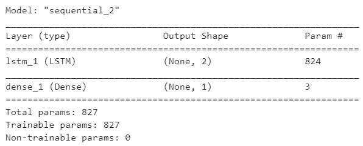图10.13-Keras模型概述
- 编译好模型后，我们就可以开始训练过程了。我们可以调用
fit()函数来拟合10个时期的训练数据集的模型:history = model.fit(X_train, y_train, epochs=10, batch_size=1, verbose=2)
- The model training process should be relatively quick. Once it’s been completed, we can take a look at the
lossvalue by visualizing the results in a graph:plt.figure(figsize=(10,6)) plt.plot(history.history[“loss”], linewidth=2) plt.title(“Model Loss”, fontsize=15) plt.xlabel(“# Epochs”, fontsize=15) plt.ylabel(“Mean Squared Error”, fontsize=15)
这将产生以下输出，显示损耗随着时间的推移而逐渐减少:
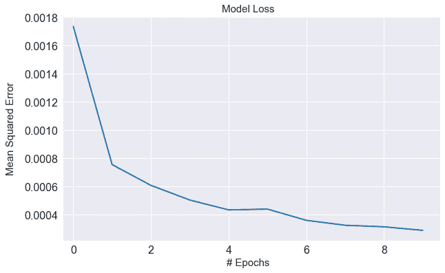图10.14–随时间推移的模型损耗
这里，我们可以看到
loss值相当一致地降低，最终在9-10历元标记附近稳定下来。注意，我们在优化器中指定了一个学习率0.001。如果我们将该值增加到0.01，或者减少到0.0001，该图的输出将会非常不同。我们可以使用学习率作为一个强大的参数来优化我们模型的性能。继续尝试，看看损失的图形输出会是什么。 - 完成模型训练后，我们可以继续使用该模型来预测感兴趣的值:
X_train_forecast = scaler.inverse_transform(model.predict(X_train)) y_train = scaler.inverse_transform([y_train.ravel()]) X_test_forecast = scaler.inverse_transform(model.predict(X_test)) y_test = scaler.inverse_transform([y_test.ravel()])
- 设置好所有数据后，我们可以通过使用
matplotlib绘制结果来可视化数据。首先，让我们使用lightgrey:plt.plot(list(range(0, len(ds))), scaler.inverse_transform(ds), label=”Original”, color=”lightgrey”)
绘制原始数据集 - 接下来，我们可以使用
blue:train_y_plot = X_train_forecast train_x_plot = [i+lookback for i in list(range(0, len(X_train_forecast)))] plt.plot(train_x_plot, train_y_plot , label=”Train”, color=”blue”)
绘制训练值 - Finally, we can plot the forecasted values using
darkorangeand a dashed line to distinguish it from its two counterparts:test_y_plot = X_test_forecast test_x_plot = [i+lookback*2 for i in list(range(len(X_train_forecast), len(X_train_forecast)+len(X_test_forecast)))] plt.plot(test_x_plot, test_y_plot , label=”Forecast”, color=”darkorange”, linewidth=2, linestyle=”--”) plt.legend()
执行这段代码后，我们将得到以下输出:
图10.15–使用LSTM模型的训练和测试数据集
在这里，我们可以看到这个相对简单的 LSTM 模型在使用我们提供的训练数据集对进行预测时非常有效。该模型不仅能够捕捉到价值的大致方向，还能够捕捉到价值的季节性。
总结
在这一章中，我们试图分析和理解时间序列数据，并在不到15页的篇幅内开发了两个预测模型。我们通过探索时间序列数据并将其分解为通常可用于浅层机器学习模型的较小特征来开始我们的旅程。然后，我们研究了时间序列数据集的组成部分，以了解潜在的构成。最后，我们开发了两个业内最常用的预测模型——脸书的Prophet模型和Keras的LSTM模型。
在过去的几章中，我们开发了各种技术解决方案来解决常见的业务问题。在下一章中，我们将探索使用Flask框架为最终用户提供这样的模型的第一步。